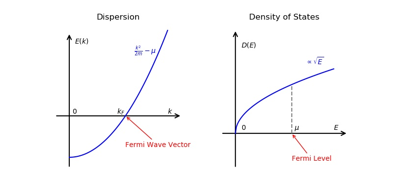

BCS-BEC Crossover
Table of Contents
1. System
Fremi gas, interaction described by s-wave scattering length \(a\) .
2. Two-Body Collisions
s- wave scattering amplitude
\begin{align} f_0(k) = - \frac{1}{\frac{1}{a} - \frac{k^2}{2}r_{\mathrm{eff}} + \mathrm{i}k} \end{align}- if \(|ka|\ll 1\) , 那么 \(f_0(k)=-a\) 是一个常数. \(a\) 的大小可以表示相互作用的强弱.
- if \(|ka|\gg 1\) , \(k|r_{\mathrm{eff}}|\ll 1\) , 那么 \(f_0(k)=\mathrm{i}/k\) , 这 叫 universal law . 散射振幅只与 \(k\) 有关, 与相互作用以及其它任何参数都无关, 这 叫 unitary regime.
- \(a>0\) 可以看作是一个排斥势. 要满足: 1). \(ka\ll 1\) , 并且只考虑低能散射态. 2). 束缚态足够 deep, 可以 safely 忽略掉.
3. Physics
3.1. BCS
3.2. BEC
3.3. Unitary
3.4. Critial Temperature
3.5. Pseudo Gap
对于无相互作用或者弱排斥的费米子(没有发生配对, 没有超流), 它的色散关系大概是一个 抛物线型
\begin{align} \varepsilon(\vec{k})= \frac{k^2}{2m} - \mu \end{align}在 \(k=\mu\) 附近的激发是 gapless 的. 在费米面附近, 从 \(k\) 以下一个无穷小的动量, 激发到上面一个很小的动量, 这是一个 gapless 的激发. 只要动量转移足够小, 激发能就 可以足够小.
如果看单粒子的 density of state , 三维的话是 \(\sqrt{E}\) 的形式.
\begin{align} D(E) = \int \mathrm{d}\vec{k} \cdot \delta (E - \varepsilon(\vec{k})) \end{align}费米面以下的态都是填满的.
如图..  picture code
激发谱在配对的时候(如果存在超流), 那么它的准粒子激发就是这样
它会打开一个 gap, 这个 gap 就是 \(\Delta\) , 因为这个时候它的激发谱变成了
\begin{align} \varepsilon(\vec{k}) = \sqrt{(\varepsilon_k - \mu)^2 + \Delta^2} \end{align}where \(\Delta = \langle \psi_{\downarrow} \psi_{\uparrow}(\vec{r})\rangle\) 这个是 BSC 平均场 Hamiltonian 做 Boguliubov 变换, 应该是求出这样一个单粒子的色散 关系.
这个 gap 反应在态密度上如图
 picture code
picture code
pseudo gap 最早的定义是说, 态密度在费米面附近有一个 deep. 这个 deep, 不同的体系, 产生的原因是不一样的. 如果激发谱在这里存在一个 gap, 它可以在这样导致一个 deep . 如果是零温下, 这里有一个 gap , 原则上它可以降到零. 在费米面这个地方, 打开一个 gap, 它这个地方就会掉到零. 其它一些原因, 有可能使得, 它可能没有掉到零, 但是它呢 会有一个 deep , 把这种情况叫做一个 psudo gap. 如果掉到零了, 它就是一个真的 gap.
对于 BCS-BEC crossover, 在弱吸引的这一边, 基本上, 比如说 \(T\) 从 \(0\) , 逐渐增高, 达到 \(T_{C}\) 的时候, 那么 \(T\) 接近 \(T_{C}\) 以后呢, 一方面它的超流序参量变成零了 \(\Delta = 0\) , 另一方面, 这个 deep 同时也消失了, 也就是说在 \(T_C\) 的时候, 超流也 消失了, 态密度就回复到一个接近无相互作用的费米子气体, 同时激发谱里也没有 gap. 但 是比如说在幺正区, 或者说在偏 BEC 那边, 在 \(T\) 接近 \(T_{C}\) 的时候呢, 序能量仍然 要接近于零, 因为这是超流到正常相的一个判据. 但是激发谱仍然是有 gap 的, 同时呢, 这里仍然有一个 deep , 但是这个 deep 这个时候通常, 比如说 \(T_{C}\) 以上, 它是不会 掉到零的, 但它还有一个 deep, 这个里面它叫做一个 pseudo gap.
3.6. Paring Gap
它指的序参量 . \(\Delta = \langle \psi_{\downarrow} \psi_{\uparrow}(\vec{r})\rangle\) .均匀系统的话, 它是和空间无关的量. 这个平均值只 要在 \(T_{C}\) 或是 \(T_{C}\) 以上, 这个肯定是零的, 因为它是一个反常的格林函数, 是两 个消灭算符.
4. Method
4.1. Mean Field
4.2. NSR
5. Reference
Ran Qi
Stinati
Pitaevskii